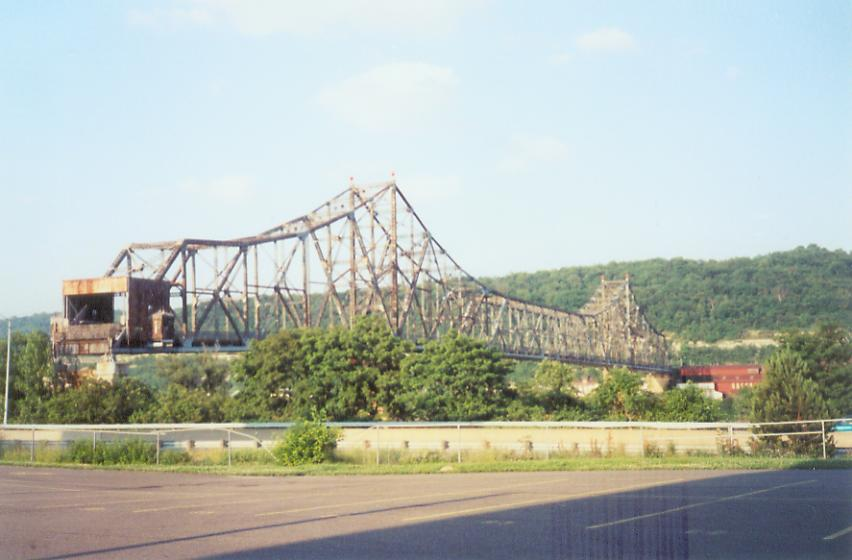
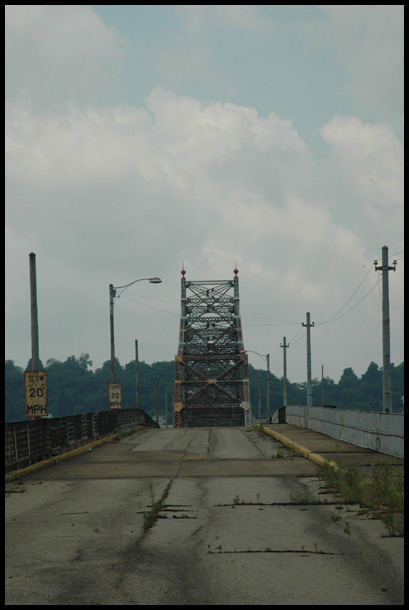
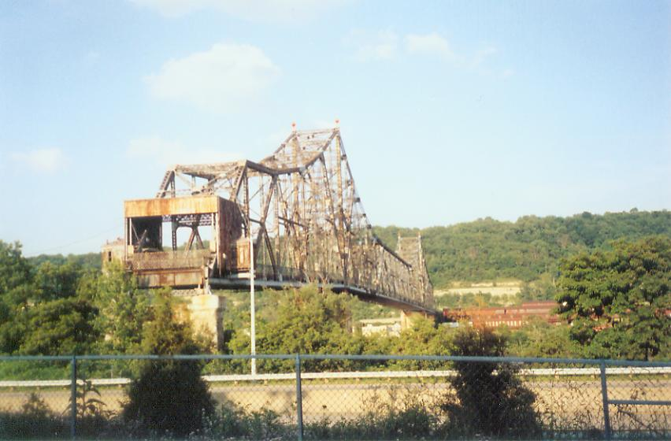
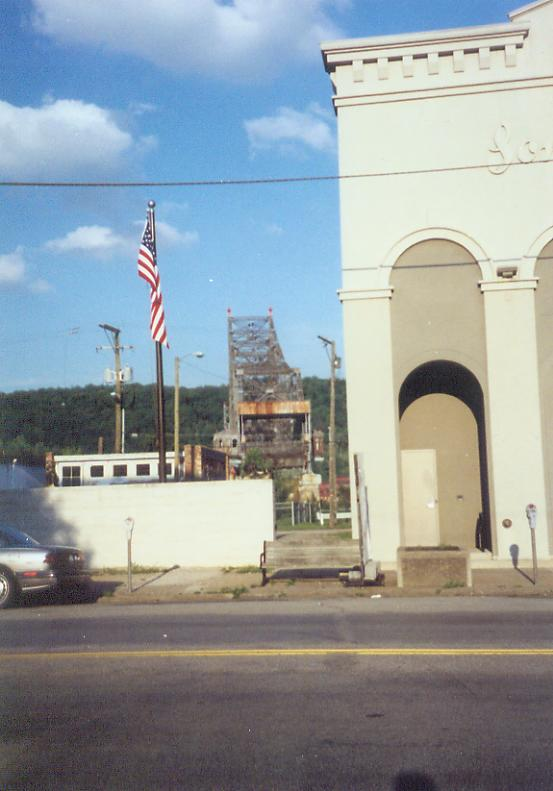
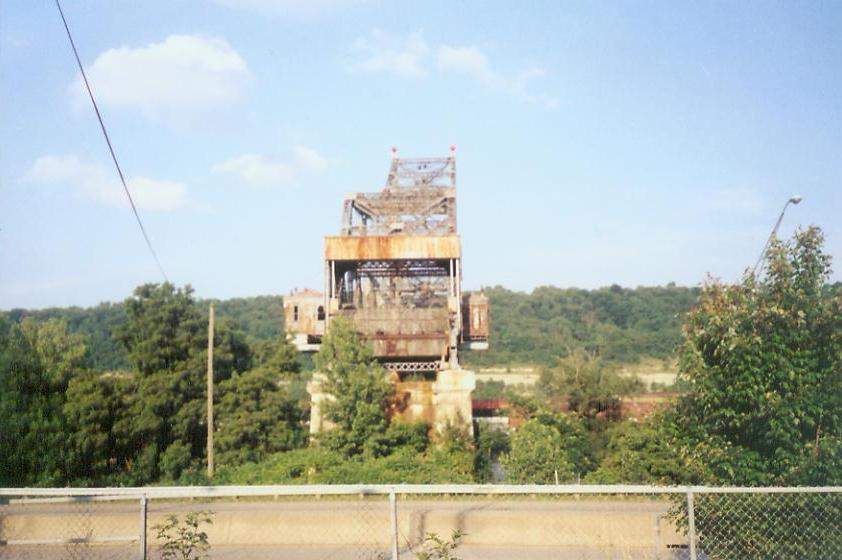
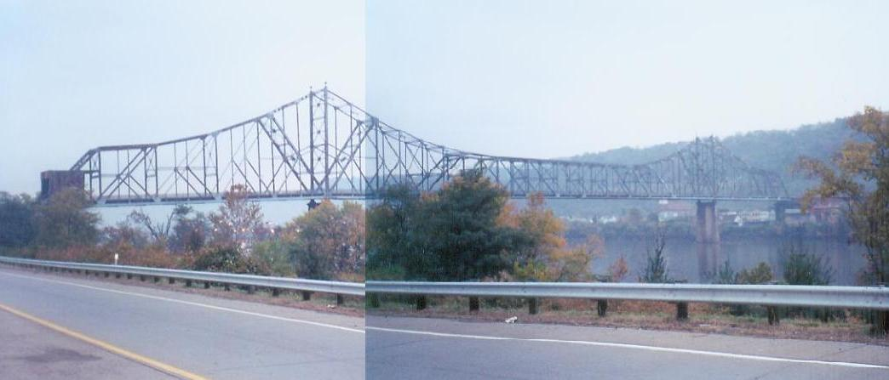
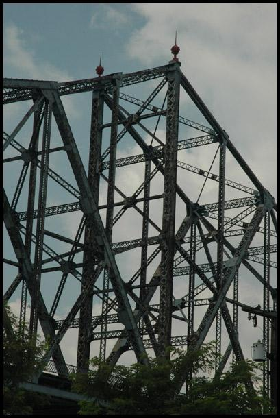
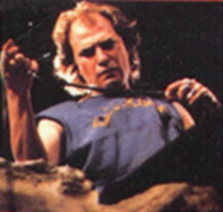

Quite an impressive abandoned site is easily seen as you cruise Route 7 in Bellaire, Ohio: the rotten remains of what was once the Bellaire Bridge. More specifically, it was known for most of its life as the Bellaire Highway Toll Bridge.

I borrowed the photo above from an actual, talented photographer's online portfolio: "Seicer" at this gallery section of the Bridges & Tunnels website. It shows the bridge from the West Virginia side (one of the few times you'll see anything of another state on Forgotten Ohio), facing our state. The old-style speed limit signs are an interesting touch. It's still possible to climb fences and walk out onto the rickety structure when starting out in the Mountain State; the steel mill city of Benwood, southern neighbor of Wheeling, left its ramps and access stairways in place, content to block them with the standard NO TRESPASSING paraphernalia. Ohio apparently didn't want the thing touching its shores anymore, because they demolished everything that might possibly take you up onto it.

That's what gives the Bellaire Toll Bridge its curiously truncated look from our side of the Ohio River. At the top of the last concrete support pillar it just ends, with nothing but a chainlink fence blocking the new, abrupt dead end.

As you can probably tell from the way it points toward downtown, the Toll Bridge was once a major connection point between two booming towns in the steel-rich Ohio River Valley. It ran across the river as part of Bellaire's 34th Street. But when they relocated State Route 7 it provided the actual reason for the demolition of Ohio's bridge ramps.

The Bellaire Bridge began as a private enterprise, constructed by J.E. Greiner and Co. in 1926. When it opened on December 22 of that year 7,000 cars lined up to pay the nickel toll and drive across to West Virginia, or back the other way. Then the toll went up to a quarter (forty cents for a round trip). It showed a solid profit until 1984 (the '80s were bad for manufacturing regions like the Ohio Valley) and as a consequence the price increased dramatically, to fifty cents each way. The state of Ohio finally purchased the Bellaire Toll Bridge for $2.1 million and closed it down on May 1, 1991, so they could move SR 7 to its present location.

It probably won't be there for long, considering its deteriorated condition. Some people would call it an eyesore, but I think it's got that forgotten relic beauty that so few people really appreciate--particularly those who sit on zoning commissions and city planning boards. But there's definitely something magnificent about the old bridge drooping its way from one side of the broad river to the other; in fact, it was so hard to get into a single frame that I had to paste two pictures together just to show it from end to end, as is quite obvious in the photo above.

An amusing note: When I was living and working in Belmont County in 2004, running a regional office for a 527 organization during the presidential election, I heard a local news report that described a prank played on police the night before. Apparently someone made repeated calls to 911 from a cell phone, claiming he had climbed onto the bridge and had fallen through the rotten wooden floor and was badly hurt and about to drop into the Ohio River. The cops and fire rescue officers scrambled to save the guy, but it turned out to be a bizarre prank. This was sometime in the fall of that year, probably around the beginning of October. It's little games like this that mean we'll probably see the abandoned toll bridge come down before much longer.
An even more amusing note: it turns out this is the bridge which Special Agent Clarice Starling (played, of course, by Jodie Foster) crosses in an aerial shot during the climax of The Silence of the Lambs, on her way to investigate a lead in the fictitious (though strikingly believable-sounding) town of Belvedere, Ohio. Bellaire stood in for Belvedere; don't all Belmont County towns begin with a B? Naturally, when she finds Jame Gumb she's at the right place and the FBI team is at the wrong one, so she has to face down the utterly brilliant Ted Levine as Buffalo Bill. Who could forget his skin-wearing, penis-tucking antics? What a phenomenal movie! And part of it was filmed right on our abandoned bridge! This bridge is a national treasure!

"It puts the lotion on its skin, or else it gets the hose again."
--Former President Buffalo Bill
Bridges & Tunnels: The Bellaire Interstate Toll Bridge
Seicer's Full Gallery of Abandoned Bellaire Bridge Photos
List of Crossings of the Ohio River
Wikipedia: Bellaire Bridge
Back